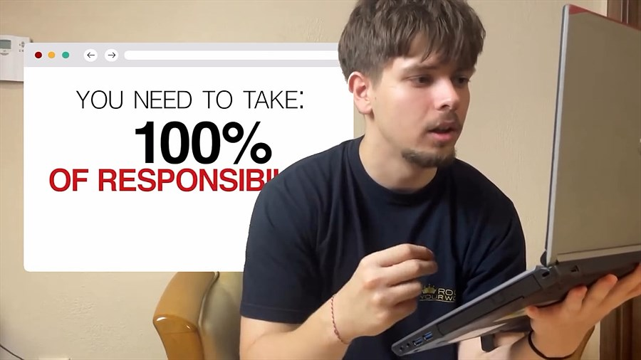
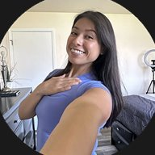

See the services
Tap an element on the desk.
I find emotion in your raw videos and turn it into visual design — not just a motion graphic, but a done-for-you service that takes care of your personal brand's video design so you can scale.
 RAW
RAW

DESIGNED
Tap an element on the desk.
Your long-form footage, cut into short-form clips built for retention: a hook in the first second and nothing that lets a thumb keep scrolling.
You only film once, but you have lots of content running.
You already have the story and the message. We position and design your content and personal brand so they reach the people you want to reach, in the right way.
No generic templates: a brand identity built around your real personality, your story and your vibe, so you stand out as the only one of you.
We take care of how your video looks and sounds: the cuts, the sound, the visuals, everything that carries your message on screen.
Each video is adjusted to match your brand identity, so it holds attention and looks like nobody else's.
You already did the hard part — showing up and saying something real. I handle the rest.
We dig into your story and your ICP — who you're really talking to and why they should care — so every piece of content we make actually sounds like you and lands with the right people.
Every second of visual design, every cut, every frame is made to count — built to hit an emotion first, because content that makes someone feel something is what earns their trust, and trust is what turns a viewer into a client.
We're on deadline, every time, and we own 100% of the video editing process from start to finish — so you get your time back to scale your business instead of babysitting your content.
I'm Sotiris — I work with coaches and founders who know they can level up their personal brand through creative visual design, and find their ICPs through the internet.
I've worked with coaches pulling in $100k+ a month, helping them tighten up their positioning, visuals, and content so their personal brand actually pulls its weight.
Here's the thing — at that level, it's rarely a "content" problem. It's a clarity problem. Visuals that don't match, a message that's all over the place, output that looks like everyone else's. End result: people who are genuinely great at what they do, staying invisible online.
That's the gap I close — through editing and visual design that digs out what's actually different about you, then turns it into content that works for you around the clock.
Matthew Feola came to me at 2,183 followers. The content we made together pulled in over 100 leads and helped grow him to 6,285 — here's him telling it.
"Sotiris was my editor for my personal brand and, honestly, the best editor I've ever had. Super quick turnaround — genuinely less than six hours, always under 24. The quality was insane, and you don't even need to give him a reference video. Unlike most editors I've worked with, he just gets what you want; after a couple of videos he already had a great idea of the style I was going for. Working with him was an amazing experience — I'd recommend it to anyone."


Six quick questions, about a minute. You'll get an honest read on whether done-for-you video design makes sense for you right now, and what to do next either way.